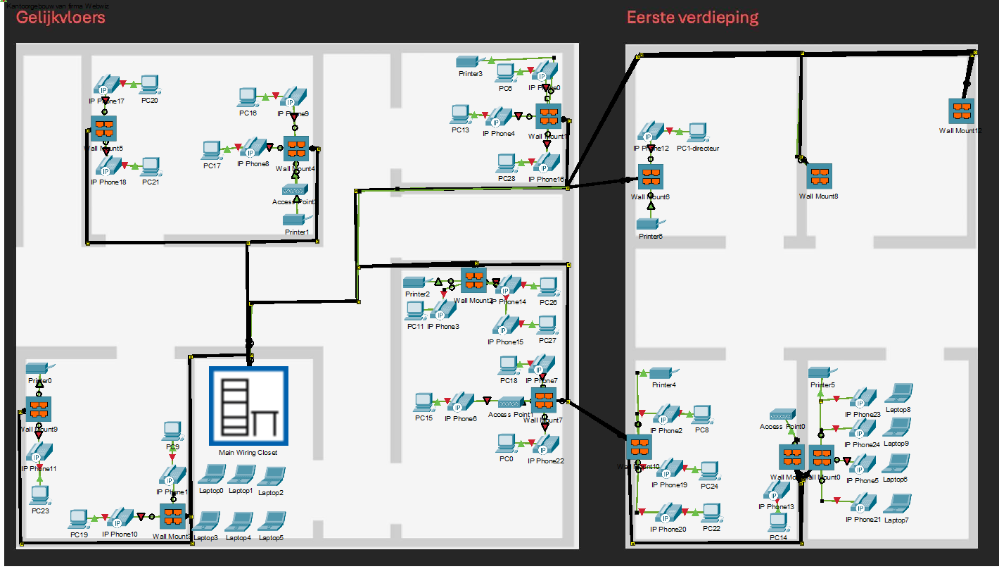
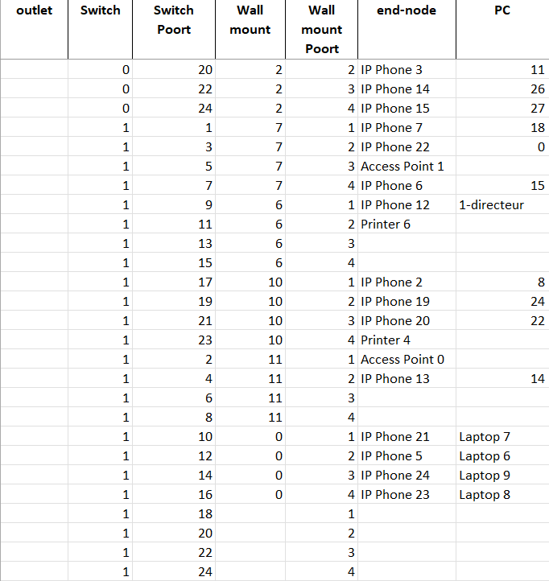
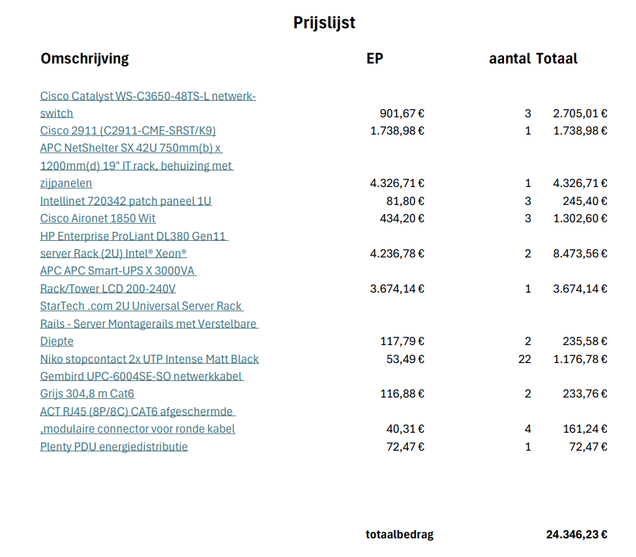

Het webwiz project
Voor het vak datacom & Netwerken moest ik samen met 2 medestudenten de opdracht webwiz: gestructureerd bekabelen uitwerken.
We kregen een start toestand van een bedrijf, met de meest chaotische en ongestructureerde infrastructuur mogelijk wat leidde tot problemen zoals een slechte dekking van het wifi bereik.
Hieronder vind u enkele foto's met telkens een klein beetje uitleg over het onderdeel van de opdracht.

bekabelingsplan (packet tracer)
Dit is het Packettracer gedeelte van het project. Het idee was hier dat we een chaotische beginsituatie moesten oplossen door nieuwe kabels te trekken en wall mounts voor ethernet aansluitingen toe te voegen.

patchplan (excel)
Dit is het patchplan dat we hebben gemaakt in excel. Hierin staat een overzicht van alle verbindingen die we hebben gemaakt in packet tracer. We hebben ook de poorten van de switches en patchpanelen genoteerd zodat we een duidelijk overzicht hadden van hoe alles verbonden was.

aankooplijst (pdf)
Dit is de aankooplijst die we hebben gemaakt in pdf formaat. Hierin staat een overzicht van alle materialen die we nodig hadden om het bekabelingsplan te kunnen uitvoeren. We hebben ook prijzen toegevoegd zodat we een totaalprijs konden berekenen voor het hele project.
Het bevat:
- switches
- kabels
- routers
- wallmounts
- servers
- een PDU
- patchpaneel